Privacy and control
Consents, a copy of your data, deleting the account and the network data, resetting Mi red, and the “That wasn't me” button: what you can do yourself.
Here is what you will be able to do yourself in the app. How this website handles data is explained in the site privacy policy at the end of this page.
You can take your “yes” back
Consents are gathered in one place: the chat with Mi gestor, analytics, offers and news. Each one is switched off with the same switch that turned it on.
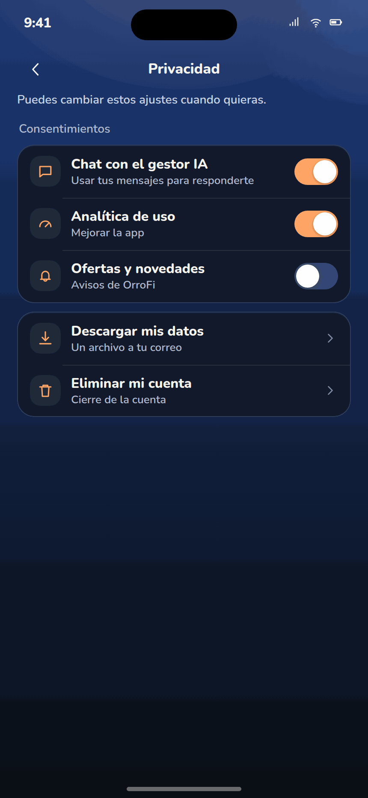
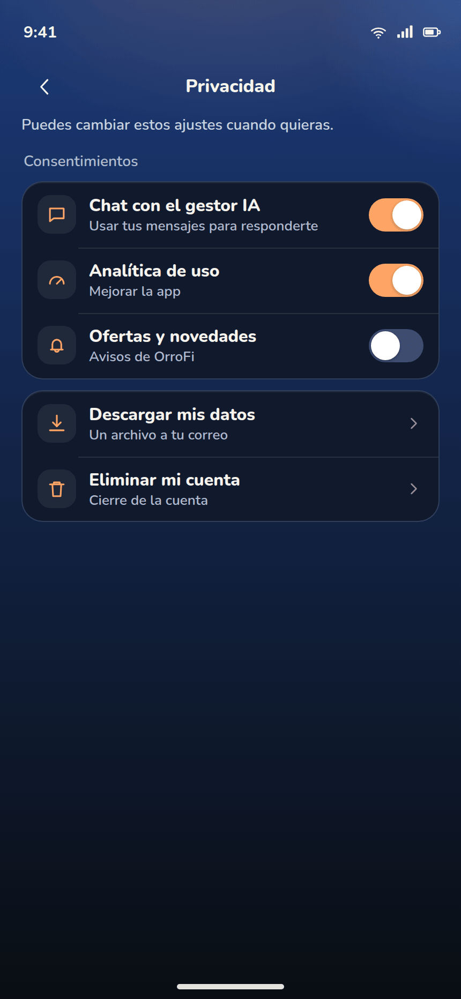
Your data, on request
You can request a copy of your data in the app. It is sent to your email.

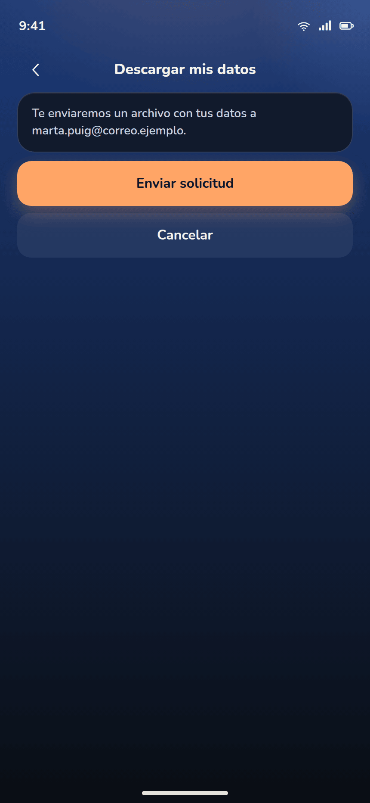
You can leave, and you can change your mind
The account is deleted once the contracts have ended. While they are still in force, the app explains why and offers to talk it over with Mi gestor. After you confirm, the deletion is scheduled, and until it has happened you can cancel it with the “Cancel deletion” button.


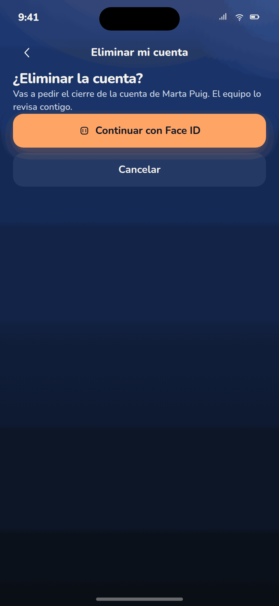
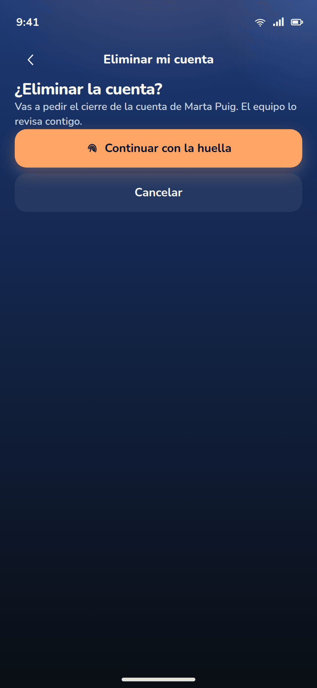


Erase the network data with a separate button
Home-network data can be deleted separately from the account. The owner does it, confirming the action with biometrics or the phone code.

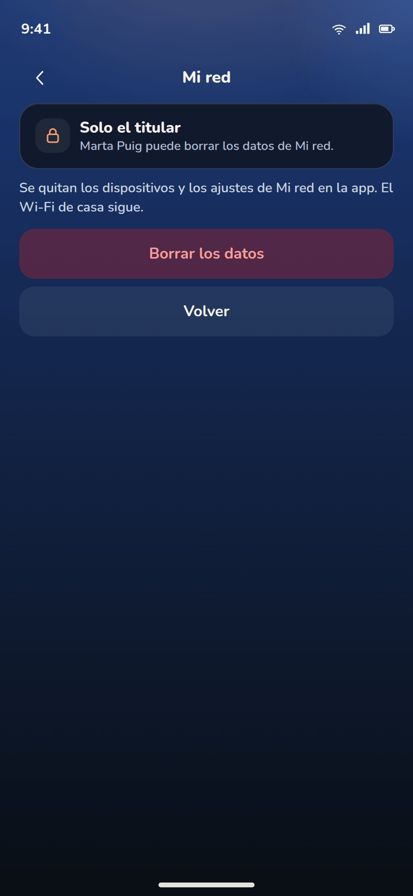

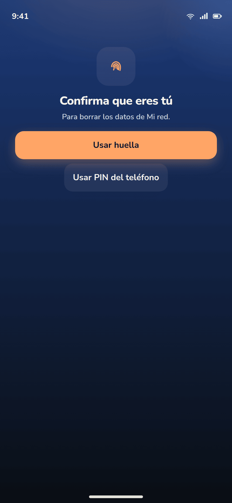


If you notice something that is not yours, press one button
If something you did not do appears in the account or in Mi red, for example an unfamiliar phone, press “That wasn't me”. We will check what happened, and the app tells you what to do at once: change the phone code and the router and Wi‑Fi passwords.


If every phone is lost, the home can be brought back
If every phone in the family is lost, or a stranger appears on the network, the owner can reset Mi red. The reset starts after 72 hours, and until then it can be cancelled. Then the phone connects again.

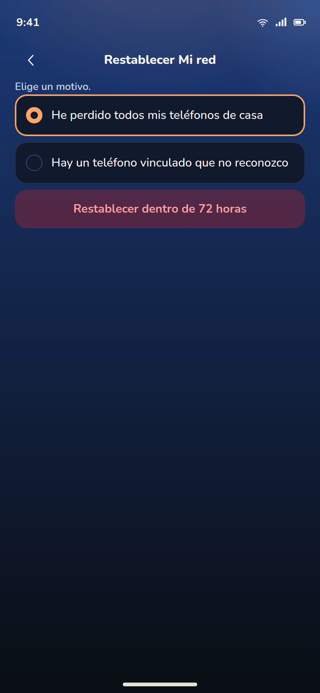
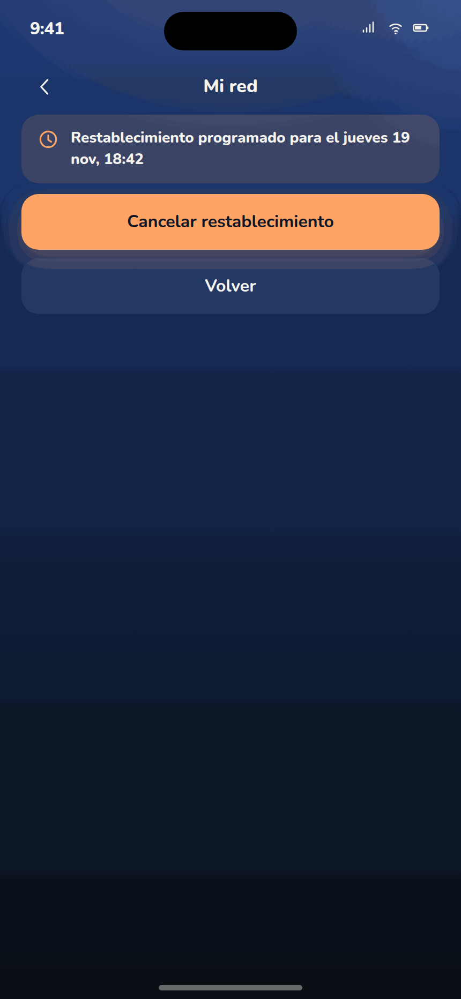
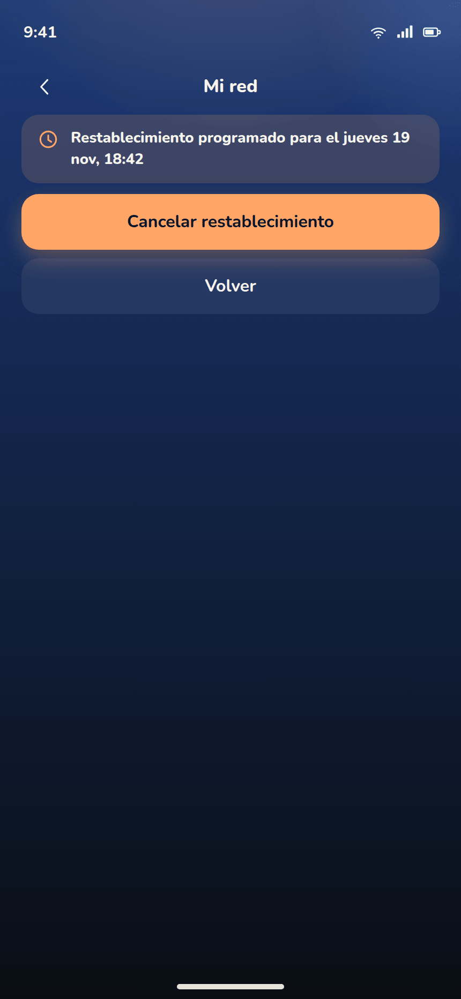
Only you can open it
The app can be locked with Face ID, and when you open it, it asks you to confirm that it is you. If Face ID does not work, the phone code will do.
The app can be locked with a fingerprint, and when you open it, it asks you to confirm that it is you. If the fingerprint does not work, the phone code will do.

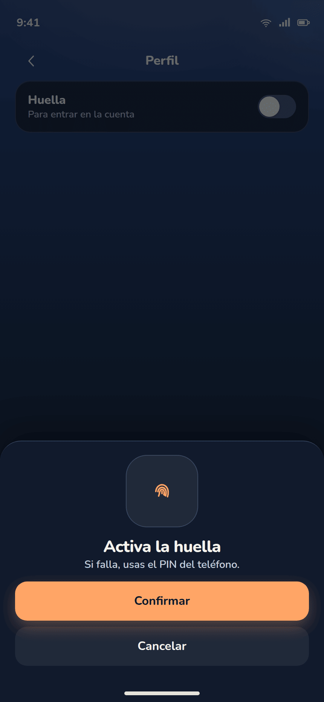


Privacy policy of this site
Controller: PADELADA WORLD, S.L. (Sociedad Unipersonal), Tax ID B05783238, Calle Josep Pla, 8, escalera 1, puerta 1, local, 17252 Calonge i Sant Antoni (Girona), Spain. E-mail: privacidad@orrofi.com. We have no data protection officer.
This site has no forms or accounts, and it does not use cookies or any analytics or advertising tools.
What your browser stores: if you choose “iPhone” or “Android”, the site remembers it in your browser's local storage so that it can show you that phone's screens. It does not leave your browser, and you can delete it in your browser settings.
Hosting: the site is hosted on GitHub Pages, run by GitHub, Inc. (United States). When you open a page, GitHub logs your IP address for security purposes, as described in its privacy statement. Legal basis: our legitimate interest in keeping the site available and secure (Art. 6(1)(f) GDPR). GitHub is certified under the EU-U.S. Data Privacy Framework.
If you write to us: we use your e-mail address and what you tell us only to reply and, if you ask to exercise your rights, to handle that request. Legal basis: our legitimate interest in replying to people who write to us (Art. 6(1)(f) GDPR) and, for rights requests, compliance with a legal obligation (Art. 6(1)(c) GDPR). E-mail passes through Cloudflare Email Routing (Cloudflare, Inc.) and is forwarded to a Gmail mailbox (Google Ireland Ltd. / Google LLC). These providers may transfer the data to the United States under the Data Privacy Framework and standard contractual clauses. We keep the message until the enquiry is closed and for 12 months after that. We keep requests to exercise rights for as long as needed to evidence the reply, and for no more than 3 years.
Your rights: you can ask for access, rectification, erasure, objection, restriction of processing and portability by writing to privacidad@orrofi.com. If you think we have not handled your request properly, you can complain to the Spanish Data Protection Agency (www.aepd.es).
The OrroFi app will have its own privacy policy, which we will publish before the app is released.